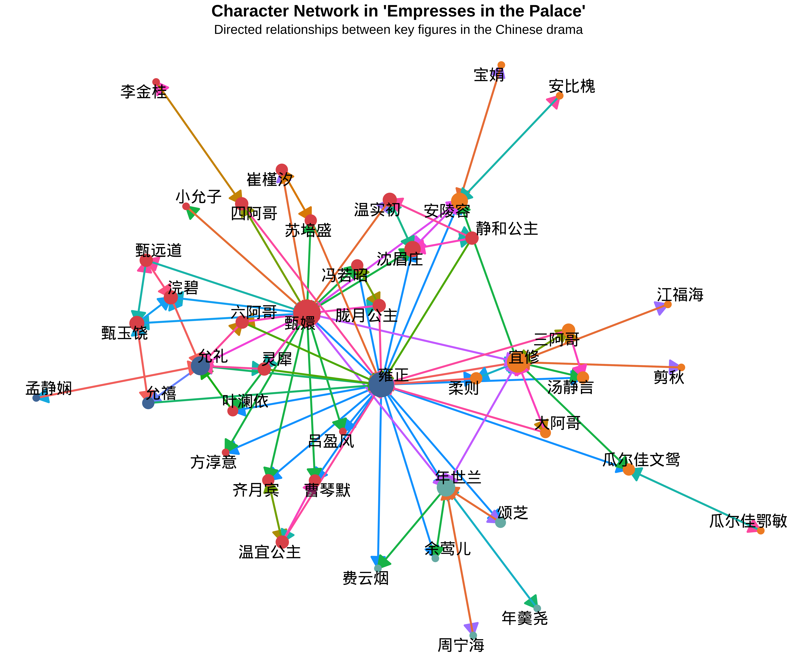

Let’s explore some fascinating examples of how computational methods can be applied to humanities questions.
2.1 Example 1: Text Analysis of Literary Works
Code
library(pacman)p_load(tidyverse, tidytext, wordcloud, gutenbergr, scales, hrbrthemes)# Function to download and process text# gutenberg_works(title == "The Age of Innocence")inno<-gutenberg_download(541)# Analyze word frequenciesword_freq<-inno%>%unnest_tokens(word, text)%>%anti_join(stop_words)%>%count(word, sort =TRUE)%>%top_n(20, n)# Create a bar plot of word frequenciesp<-ggplot(word_freq, aes(x =reorder(word, n), y =n))+geom_col(fill ="#69b3a2", width =0.7)+geom_text(aes(label =n), hjust =-0.3, size =3)+coord_flip()+scale_y_continuous(expand =expansion(mult =c(0, 0.1)))+labs(x =NULL, y ="Frequency", title ="Top 20 Most Frequent Words in The Age of Innocence", subtitle ="After removing common stop words", caption ="Source: Project Gutenberg")+theme_minimal()+theme( plot.title =element_text(size =16, face ="bold", margin =margin(b =10)), plot.subtitle =element_text(size =12, color ="gray50", margin =margin(b =20)), plot.caption =element_text(size =10, color ="gray50", margin =margin(t =10)), axis.text =element_text(size =10), axis.title =element_text(size =12), panel.grid.major.y =element_blank(), panel.grid.minor =element_blank(), plot.margin =margin(20, 20, 20, 20))# Print the plotprint(p)
This word cloud visualizes the most frequent words in The Age of Innocence, giving us a quick insight into common themes and vocabulary.
Discussion
What words stand out to you in this visualization?
How might this kind of analysis complement traditional close reading of literary works?
What limitations might this approach have for understanding the author’s language?
2.2 Example 2: Sentiment Analysis of Jane Austen’s Novels
This visualization shows the emotional trajectory of Jane Austen’s novels over their narrative time.
Discussion: Narrative Emotions
What patterns do you notice in the emotional arcs of Austen’s novels?
How might this type of analysis enhance our understanding of narrative structure?
What challenges might arise in applying sentiment analysis to historical texts?
2.3 Example 3: Network Analysis of “Empresses in the Palace” Characters
Code
library(pacman)p_load(jsonlite,igraph,ggraph,tidyverse,showtext,ggrepel,cowplot)# Add Noto Sans CJK fontfont_add_google("Noto Sans SC", "Noto Sans SC")showtext_auto()# Read the JSON datarelation_data<-fromJSON("../book/data/relation.json")relation_data$nodes<-relation_data$nodes%>%rename(Bio="角色描述")relation_data$nodes<-relation_data$nodes%>%mutate(Alliance =ifelse(Alliance=="皇后阵容","皇后阵营",Alliance))# Ensure that the 'source' and 'target' in edges match the 'ID' in nodesrelation_data$edges$source<-as.character(relation_data$edges$source)relation_data$edges$target<-as.character(relation_data$edges$target)relation_data$nodes$ID<-as.character(relation_data$nodes$ID)edges<-relation_data$edges%>%select(-Relationship)# Set the ID as the row names for the nodes dataframerownames(relation_data$nodes)<-relation_data$nodes$ID# Create the directed graphempresses_graph<-graph_from_data_frame(d =edges, vertices =relation_data$nodes$ID, directed =TRUE)# Set node attributesV(empresses_graph)$Alliance<-relation_data$nodes$AllianceV(empresses_graph)$Label<-relation_data$nodes$Label# Create a color palette for alliancesalliance_colors<-c("皇室成员"="#4E79A7", # Royal Blue"皇后阵营"="#F28E2B", # Warm Orange"甄嬛阵营"="#E15759", # Soft Red"华妃阵营"="#76B7B2"# Teal)# Calculate node size based on total degree centrality (in + out)V(empresses_graph)$size<-degree(empresses_graph, mode ="total")*0.5+3E(empresses_graph)$Relationship<-relation_data$edges$Relationship# Plot the networkset.seed(123)# for reproducibilityplot<-ggraph(empresses_graph, layout ="fr")+geom_edge_link0(aes(edge_color =Relationship), arrow =arrow(length =unit(0.2, "inches"), ends ="last", type ="closed"), show.legend =FALSE, width =1)+geom_node_point(aes(color =Alliance, size =size), shape =20, show.legend =FALSE)+geom_node_text(aes(label =Label), repel =TRUE, size =6)+scale_color_manual(values =alliance_colors)+scale_edge_colour_discrete()+scale_size_continuous(range =c(5, 20))+theme_void()+labs(title ="Character Network in 'Empresses in the Palace'", subtitle ="Directed relationships between key figures in the Chinese drama")+theme( plot.title =element_text(hjust =0.5, size =18, face ="bold"), plot.subtitle =element_text(hjust =0.5, size =14), legend.text =element_text(size =8), legend.title =element_text(size =10, face ="bold"))# Plotplot

This visualization shows the complex network of relationships between characters in the Chinese drama “Empresses in the Palace” (甄嬛传).
Discussion: Character Networks in Historical Dramas
What insights can we gain from this network visualization? What information is presented in the plot?
Which characters appear to be central to the network? How might their positions reflect their importance in the narrative?
How could this type of analysis complement traditional literary analysis of historical dramas or novels?
What limitations might this network analysis have in representing the complex relationships and dynamics of the story?
Let’s verify our impressions!
Code
library(pacman)p_load(jsonlite,igraph,ggraph,tidyverse,showtext,ggrepel,cowplot)# Create dummy data for legendsalliance_data<-data.frame( Alliance =levels(factor(V(empresses_graph)$Alliance)), x =1, y =1:length(levels(factor(V(empresses_graph)$Alliance))))size_data<-data.frame( size =c(5, 10, 15, 20), x =1, y =1:4)relationship_data<-data.frame( Relationship =levels(factor(E(empresses_graph)$Relationship)), x =1, y =1:length(levels(factor(E(empresses_graph)$Relationship))))# Create separate legendsnode_legend<-cowplot::get_legend(ggplot()+geom_point(data =alliance_data, aes(x, y, color =Alliance), size =5)+geom_point(data =size_data, aes(x, y, size =size), color ="black")+scale_color_manual(values =alliance_colors, name ="Alliance")+scale_size_continuous(range =c(5, 20), name ="Connections")+guides( color =guide_legend(override.aes =list(size =5)), size =guide_legend(override.aes =list(color ="steelblue")))+theme( legend.background =element_blank(), legend.key =element_blank(), legend.spacing.y =unit(0.5, "cm")))edge_legend<-cowplot::get_legend(ggplot(relationship_data, aes(x, y, color =Relationship))+geom_segment(aes(x =0, xend =1, yend =y), arrow =arrow(length =unit(0.2, "inches"), type ="closed"))+scale_color_discrete(name ="Relationship")+theme( legend.background =element_blank(), legend.key =element_blank(), legend.spacing.y =unit(0.2, "cm"), legend.text =element_text(margin =margin(r =15))))# Combine plot and legendscombined_legend<-plot_grid(node_legend, edge_legend, ncol =1, rel_heights =c(1, 1.5), align ='v', axis ='l')# Combine main plot and legendsfinal_plot<-plot_grid(plot, combined_legend, rel_widths =c(5, 2), align ='h', axis ='tb')# Display the final plotfinal_plot
Code
library(pacman)p_load(jsonlite,igraph,ggraph,tidyverse,showtext,ggrepel,cowplot)# Display summary statisticscharacter_summary<-tibble( Alliance =names(table(V(empresses_graph)$Alliance)), Count =as.numeric(table(V(empresses_graph)$Alliance)))%>%arrange(desc(Count))knitr::kable(character_summary, caption ="Summary of Character Alliances")
Summary of Character Alliances
Alliance
Count
甄嬛阵营
22
皇后阵营
12
华妃阵营
6
皇室成员
4
Code
# Calculate and display top 5 characters by total degree centralitytop_characters<-tibble( Character =V(empresses_graph)$Label, InDegree =degree(empresses_graph, mode ="in"), OutDegree =degree(empresses_graph, mode ="out"), TotalDegree =degree(empresses_graph, mode ="total"))%>%arrange(desc(TotalDegree))%>%left_join(.,relation_data$nodes%>%select(Label,Title,Alliance,Bio),by=(c("Character"="Label")))%>%slice_head(n =5)knitr::kable(top_characters, caption ="Top 5 Characters by Total Connections")
These demonstrations showcase just a few of the exciting possibilities that digital humanities offers for exploring and analyzing humanities data. By combining computational methods with traditional humanities scholarship, we can uncover new patterns, ask novel questions, and gain fresh insights into cultural and historical materials.
Final Reflection
Consider the examples we’ve explored today:
Which technique (word frequency analysis, sentiment analysis, or network analysis) do you find most intriguing? Why?
Can you think of a humanities question or topic from your own interests that might benefit from one of these computational approaches?
Share your thoughts with a partner or the class if time allows.